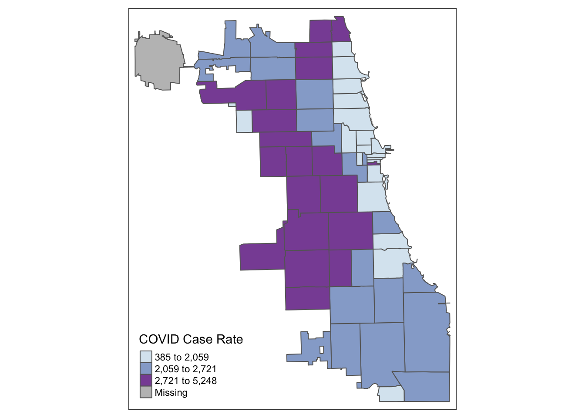
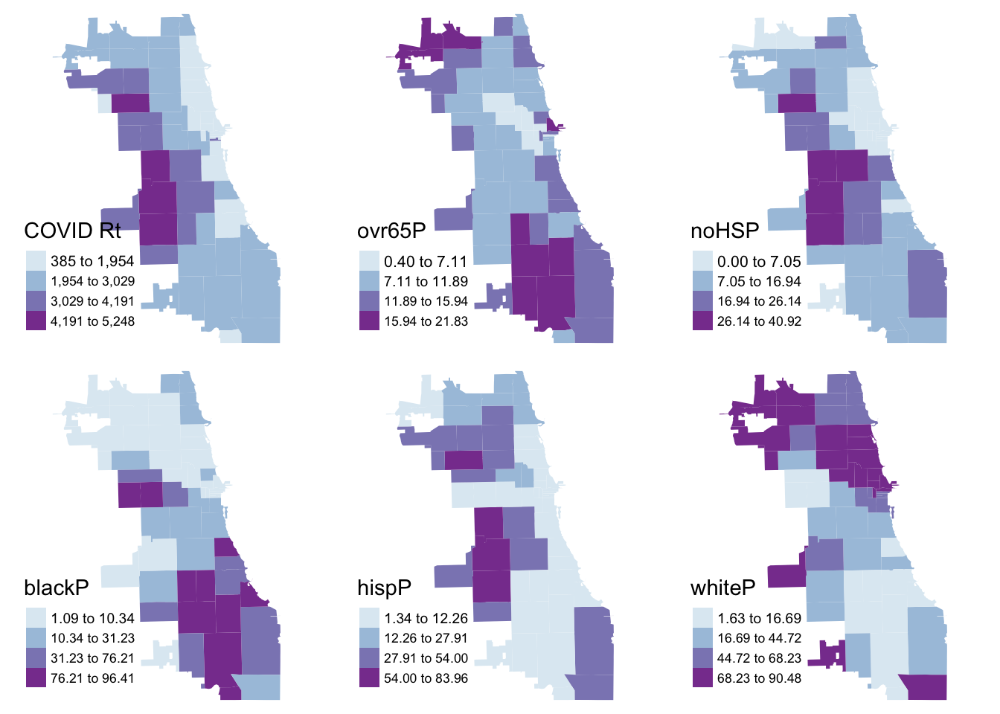

2 Map Neighborhoods
When considering the health of persons, we have to also consider the neighborhood environment. Sometimes this is looking at neighborhood level health outcomes, like premature mortality at the census tract scale, or cumulative COVID rates by zip code. Sometimes we’re interested in neighborhood factors like how poverty, access to affordable housing or healthy produce, or distance to nearest health provider, or pollution-emitting facility. These measurements of the “social determinants of health” at the neighborhood scale are increasingly urgent in modern public health thinking.
In this module, we’ll learn about the basics of thematic mapping – known as choropleth mapping – to visualize neighborhood level health phenomena.
2.1 Clean Attribute Data
Let’s consider COVID-19 cases by zip code in Chicago. We’ll upload and inspect a summary of cases from the Chicago Data Portal first:
## ZIP.Code Week.Number Week.Start Week.End Cases...Weekly Cases...Cumulative
## 1 60603 39 09/20/2020 09/26/2020 0 13
## 2 60604 39 09/20/2020 09/26/2020 0 31
## 3 60611 16 04/12/2020 04/18/2020 8 72
## 4 60611 15 04/05/2020 04/11/2020 7 64
## 5 60615 11 03/08/2020 03/14/2020 NA NA
## 6 60603 10 03/01/2020 03/07/2020 NA NA
## Case.Rate...Weekly Case.Rate...Cumulative Tests...Weekly Tests...Cumulative
## 1 0 1107.3 25 327
## 2 0 3964.2 12 339
## 3 25 222.0 101 450
## 4 22 197.4 59 349
## 5 NA NA 6 9
## 6 NA NA 0 0
## Test.Rate...Weekly Test.Rate...Cumulative Percent.Tested.Positive...Weekly
## 1 2130 27853.5 0.0
## 2 1534 43350.4 0.0
## 3 312 1387.8 0.1
## 4 182 1076.3 0.1
## 5 14 21.7 NA
## 6 0 0.0 NA
## Percent.Tested.Positive...Cumulative Deaths...Weekly Deaths...Cumulative
## 1 0.0 0 0
## 2 0.1 0 0
## 3 0.2 0 0
## 4 0.2 0 0
## 5 NA 0 0
## 6 NA 0 0
## Death.Rate...Weekly Death.Rate...Cumulative Population Row.ID
## 1 0 0 1174 60603-39
## 2 0 0 782 60604-39
## 3 0 0 32426 60611-16
## 4 0 0 32426 60611-15
## 5 0 0 41563 60615-11
## 6 0 0 1174 60603-10
## ZIP.Code.Location
## 1 POINT (-87.625473 41.880112)
## 2 POINT (-87.629029 41.878153)
## 3 POINT (-87.620291 41.894734)
## 4 POINT (-87.620291 41.894734)
## 5 POINT (-87.602725 41.801993)
## 6 POINT (-87.625473 41.880112)Each row corresponds to a zip code at a differnent week. This data thus exists as a “long” format, which doesn’t work for spatial analysis. We need to convert to “wide” format, or at the very least, ensure that each zip code corresponds to one row.
To simplify, let’s identify the last week of the dataset, and then subset the data frame to only show that week. We will be interested in the cumulative case rate. Following is one way of doing this – can you think of another way? Try out different approaches to test your R and “tidy” skills.
## [1] 1 31## Convert Week.End to numeric
COVID$week_end <- as.numeric(COVID$Week.End)
## Subset & inspect to week 39.
COVID.39 <- subset(COVID, COVID$Week.Number == "39")
head(COVID.39)## ZIP.Code Week.Number Week.Start Week.End Cases...Weekly Cases...Cumulative
## 1 60603 39 09/20/2020 09/26/2020 0 13
## 2 60604 39 09/20/2020 09/26/2020 0 31
## 36 60601 39 09/20/2020 09/26/2020 8 213
## 37 60602 39 09/20/2020 09/26/2020 0 21
## 41 60605 39 09/20/2020 09/26/2020 12 391
## 66 60610 39 09/20/2020 09/26/2020 35 666
## Case.Rate...Weekly Case.Rate...Cumulative Tests...Weekly Tests...Cumulative
## 1 0 1107.3 25 327
## 2 0 3964.2 12 339
## 36 54 1451.4 202 4304
## 37 0 1688.1 27 460
## 41 44 1420.8 291 7160
## 66 90 1706.9 500 10680
## Test.Rate...Weekly Test.Rate...Cumulative Percent.Tested.Positive...Weekly
## 1 2130 27853.5 0.0
## 2 1534 43350.4 0.0
## 36 1376 29328.8 0.0
## 37 2170 36977.5 0.0
## 41 1058 26018.4 0.0
## 66 1281 27371.3 0.1
## Percent.Tested.Positive...Cumulative Deaths...Weekly Deaths...Cumulative
## 1 0.0 0 0
## 2 0.1 0 0
## 36 0.0 1 6
## 37 0.0 0 0
## 41 0.1 1 3
## 66 0.1 0 10
## Death.Rate...Weekly Death.Rate...Cumulative Population Row.ID
## 1 0.0 0.0 1174 60603-39
## 2 0.0 0.0 782 60604-39
## 36 6.8 40.9 14675 60601-39
## 37 0.0 0.0 1244 60602-39
## 41 3.6 10.9 27519 60605-39
## 66 0.0 25.6 39019 60610-39
## ZIP.Code.Location week_end
## 1 POINT (-87.625473 41.880112) 30
## 2 POINT (-87.629029 41.878153) 30
## 36 POINT (-87.622844 41.886262) 30
## 37 POINT (-87.628309 41.883136) 30
## 41 POINT (-87.623449 41.867824) 30
## 66 POINT (-87.63581 41.90455) 30To clean our data a bit, we’ll just keep the zip code name, and cumulative case rate for the week of September 20th, 2020.
## ZIP.Code Case.Rate...Cumulative
## 1 60603 1107.3
## 2 60604 3964.2
## 36 60601 1451.4
## 37 60602 1688.1
## 41 60605 1420.8
## 66 60610 1706.92.2 Merge Spatial Data
Next, let’s merge this data to our zip code master spatial file. Reload if necessary:
## Reading layer `geo_export_54bc15d8-5ef5-40e4-8f72-bb0c6dbac9a5' from data source
## `/Users/maryniakolak/code/Intro2RSpatialMed/data/geo_export_54bc15d8-5ef5-40e4-8f72-bb0c6dbac9a5.shp'
## using driver `ESRI Shapefile'
## Simple feature collection with 61 features and 4 fields
## Geometry type: MULTIPOLYGON
## Dimension: XY
## Bounding box: xmin: -87.94011 ymin: 41.64454 xmax: -87.52414 ymax: 42.02304
## CRS: 4326## Simple feature collection with 6 features and 4 fields
## Geometry type: MULTIPOLYGON
## Dimension: XY
## Bounding box: xmin: -87.80649 ymin: 41.88747 xmax: -87.59852 ymax: 41.93228
## CRS: 4326
## objectid shape_area shape_len zip geometry
## 1 33 106052287 42720.04 60647 MULTIPOLYGON (((-87.67762 4...
## 2 34 127476051 48103.78 60639 MULTIPOLYGON (((-87.72683 4...
## 3 35 45069038 27288.61 60707 MULTIPOLYGON (((-87.785 41....
## 4 36 70853834 42527.99 60622 MULTIPOLYGON (((-87.66707 4...
## 5 37 99039621 47970.14 60651 MULTIPOLYGON (((-87.70656 4...
## 6 38 23506056 34689.35 60611 MULTIPOLYGON (((-87.61401 4...Next, merge on zip code ID. The key in the Chi_Zips object is zip, whereas the key for the COVID data is ZIP.code.
## Simple feature collection with 6 features and 5 fields
## Geometry type: MULTIPOLYGON
## Dimension: XY
## Bounding box: xmin: -87.63999 ymin: 41.85317 xmax: -87.60246 ymax: 41.88913
## CRS: 4326
## zip objectid shape_area shape_len Case.Rate...Cumulative
## 1 60601 27 9166246 19804.58 1451.4
## 2 60602 26 4847125 14448.17 1688.1
## 3 60603 19 4560229 13672.68 1107.3
## 4 60604 48 4294902 12245.81 3964.2
## 5 60605 20 36301276 37973.35 1420.8
## 6 60606 31 6766411 12040.44 2289.6
## geometry
## 1 MULTIPOLYGON (((-87.62271 4...
## 2 MULTIPOLYGON (((-87.60997 4...
## 3 MULTIPOLYGON (((-87.61633 4...
## 4 MULTIPOLYGON (((-87.63376 4...
## 5 MULTIPOLYGON (((-87.62064 4...
## 6 MULTIPOLYGON (((-87.63397 4...2.3 Quantile Maps
Starting with a “classic epi” approach, let’s look at case rates as quantiles. We use the tmap library, and update the choropleth data classification using the “style” parameter. We use the Blue-Purple palette, or BuPu, from Colorbrewer.
library(tmap)
tm_shape(Chi_Zipsf ) +
tm_polygons("Case.Rate...Cumulative",
style="quantile", pal="BuPu",
title = "COVID Case Rate") Let’s try tertiles:
tm_shape(Chi_Zipsf ) +
tm_polygons("Case.Rate...Cumulative",
style="quantile", n=3, pal="BuPu",
title = "COVID Case Rate") 
2.4 Standard Deviation Maps
While quantiles are a nice start, let’s classify using a standard deviation map. Standard deviation is a statistical technique type of map based on how much the data differs from the mean.
2.5 Jenks Maps
Another approach of data classification is natural breaks, or jenks. This approach looks for “natural breaks” in the data using a univariate clustering algorithm.
tm_shape(Chi_Zipsf ) +
tm_polygons("Case.Rate...Cumulative",
style="jenks", pal="BuPu",
title = "COVID Case Rate") The first bin doesn’t seem very intuitive. Let’s try 4 bins instead of 5 by changing the n parameter. In this version, we’ll also had a histogram and scale bar, and move the legend outside the frame to make it easier to view.
2.6 Integrate More Data
To explore potential disparities in COVID health outcomes, let’s bring in demographic, racial, ethnic data from the OEPS project. This data is orginally sources from the American Community Survey 2018 5-year estimate.
## ZCTA year totPopE whiteP blackP amIndP asianP pacIsP otherP hispP noHSP
## 1 35004 2018 11762 84.39 13.09 0.00 0.94 0.00 1.57 0.94 5.52
## 2 35005 2018 7528 55.22 42.44 0.64 0.00 0.15 1.55 1.37 17.48
## 3 35006 2018 2927 96.04 3.21 0.27 0.00 0.00 0.48 0.00 14.44
## 4 35007 2018 26328 73.83 13.75 0.04 1.33 0.02 11.01 11.11 12.41
## 5 35010 2018 20625 63.07 32.43 0.39 0.65 0.00 3.45 4.10 22.00
## 6 35013 2018 40 100.00 0.00 0.00 0.00 0.00 0.00 100.00 100.00
## age0_4 age5_14 age15_19 age20_24 age15_44 age45_49 age50_54 age55_59 age60_64
## 1 787 1950 457 746 4552 662 541 776 832
## 2 511 1055 455 277 2429 580 469 560 552
## 3 161 413 141 203 878 129 193 316 278
## 4 1891 4161 1619 1400 9947 1993 2067 1713 1315
## 5 1013 2647 1383 1087 7036 1418 1545 1510 1341
## 6 0 0 0 0 13 8 19 0 0
## ageOv65 ageOv18 age18_64 a15_24P und45P ovr65P disbP
## 1 1662 8820 7158 10.23 61.97 14.13 12.7
## 2 1372 5691 4319 9.72 53.07 18.23 23.2
## 3 559 2308 1749 11.75 49.61 19.10 20.9
## 4 3241 19178 15937 11.47 60.77 12.31 13.5
## 5 4115 16142 12027 11.98 51.86 19.95 19.6
## 6 0 40 40 0.00 32.50 0.00 0.0Merge to our master Zip Code dataset.
## Simple feature collection with 6 features and 31 fields
## Geometry type: MULTIPOLYGON
## Dimension: XY
## Bounding box: xmin: -87.63999 ymin: 41.85317 xmax: -87.60246 ymax: 41.88913
## CRS: 4326
## zip objectid shape_area shape_len Case.Rate...Cumulative year totPopE whiteP
## 1 60601 27 9166246 19804.58 1451.4 2018 14675 74.17
## 2 60602 26 4847125 14448.17 1688.1 2018 1244 68.17
## 3 60603 19 4560229 13672.68 1107.3 2018 1174 63.46
## 4 60604 48 4294902 12245.81 3964.2 2018 782 63.43
## 5 60605 20 36301276 37973.35 1420.8 2018 27519 61.20
## 6 60606 31 6766411 12040.44 2289.6 2018 3101 72.75
## blackP amIndP asianP pacIsP otherP hispP noHSP age0_4 age5_14 age15_19 age20_24
## 1 5.57 0.45 18.00 0.00 1.81 8.68 0.00 550 156 907 909
## 2 3.78 5.31 19.45 0.00 3.30 6.51 0.00 61 87 18 91
## 3 3.24 0.00 27.60 0.00 5.71 9.80 0.00 13 43 179 172
## 4 5.63 0.00 29.67 0.00 1.28 4.35 0.00 12 7 52 168
## 5 17.18 0.18 16.10 0.03 5.31 5.84 2.39 837 1279 2172 2282
## 6 2.35 0.00 18.09 0.00 6.80 6.29 0.73 57 44 0 139
## age15_44 age45_49 age50_54 age55_59 age60_64 ageOv65 ageOv18 age18_64 a15_24P
## 1 8726 976 1009 324 859 2075 13855 11780 12.37
## 2 987 46 53 0 5 5 1095 1090 8.76
## 3 684 75 47 150 50 112 1118 1006 29.90
## 4 450 27 47 54 92 93 744 651 28.13
## 5 16364 1766 1520 1824 1360 2569 25259 22690 16.19
## 6 1863 213 153 168 172 431 3000 2569 4.48
## und45P ovr65P disbP geometry
## 1 64.27 14.14 6.4 MULTIPOLYGON (((-87.62271 4...
## 2 91.24 0.40 0.2 MULTIPOLYGON (((-87.60997 4...
## 3 63.03 9.54 7.3 MULTIPOLYGON (((-87.61633 4...
## 4 59.97 11.89 4.1 MULTIPOLYGON (((-87.63376 4...
## 5 67.15 9.34 5.3 MULTIPOLYGON (((-87.62064 4...
## 6 63.33 13.90 1.9 MULTIPOLYGON (((-87.63397 4...2.7 Thematic Map Panel
COVID <- tm_shape(Chi_Zipsf) + tm_fill("Case.Rate...Cumulative",
style="jenks", pal="BuPu", n=4, title = "COVID Rt") +
tm_layout(frame = F)
Senior <- tm_shape(Chi_Zipsf) + tm_fill("ovr65P",
style="jenks", pal="BuPu", n=4) +
tm_layout(frame = F)
NoHS <- tm_shape(Chi_Zipsf) + tm_fill("noHSP",
style="jenks", pal="BuPu", n=4) +
tm_layout(frame = F)
BlkP <- tm_shape(Chi_Zipsf) + tm_fill("blackP",
style="jenks", pal="BuPu", n=4) +
tm_layout(frame = F)
Latnx <- tm_shape(Chi_Zipsf) + tm_fill("hispP",
style="jenks", pal="BuPu", n=4) +
tm_layout(frame = F)
WhiP <- tm_shape(Chi_Zipsf) + tm_fill("whiteP",
style="jenks", pal="BuPu", n=4) +
tm_layout(frame = F)
tmap_arrange(COVID, Senior, NoHS, BlkP, Latnx, WhiP)## Legend labels were too wide. The labels have been resized to 0.63, 0.55, 0.55, 0.55. Increase legend.width (argument of tm_layout) to make the legend wider and therefore the labels larger.## Legend labels were too wide. The labels have been resized to 0.66, 0.60, 0.55, 0.55. Increase legend.width (argument of tm_layout) to make the legend wider and therefore the labels larger.
## Legend labels were too wide. The labels have been resized to 0.66, 0.60, 0.55, 0.55. Increase legend.width (argument of tm_layout) to make the legend wider and therefore the labels larger.## Legend labels were too wide. The labels have been resized to 0.60, 0.55, 0.55, 0.55. Increase legend.width (argument of tm_layout) to make the legend wider and therefore the labels larger.
## Legend labels were too wide. The labels have been resized to 0.60, 0.55, 0.55, 0.55. Increase legend.width (argument of tm_layout) to make the legend wider and therefore the labels larger.
## Legend labels were too wide. The labels have been resized to 0.60, 0.55, 0.55, 0.55. Increase legend.width (argument of tm_layout) to make the legend wider and therefore the labels larger.
2.8 Write Data
## Warning in CPL_write_ogr(obj, dsn, layer, driver, as.character(dataset_options), :
## GDAL Error 6: DeleteLayer() not supported by this dataset.## Deleting layer not supported by driver `GeoJSON'
## Deleting layer `ChiZipMaster1' failed
## Writing layer `ChiZipMaster1' to data source
## `data/ChiZipMaster1.geojson' using driver `GeoJSON'
## Updating existing layer ChiZipMaster1
## Writing 60 features with 31 fields and geometry type Multi Polygon.More Resources
For choropleth mapping in R: